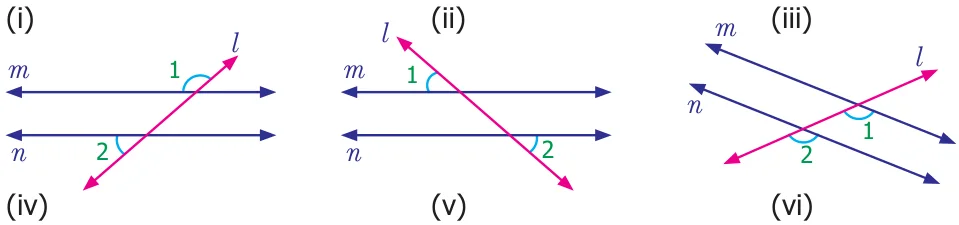
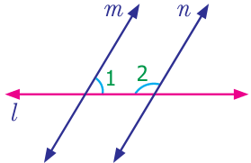
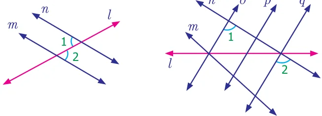
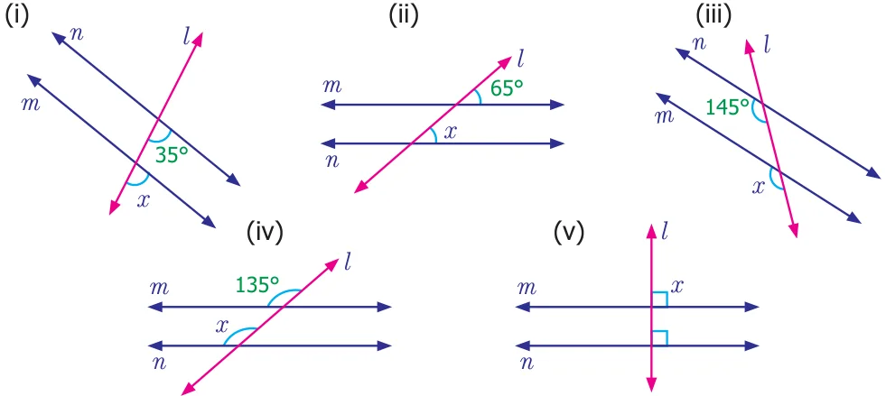
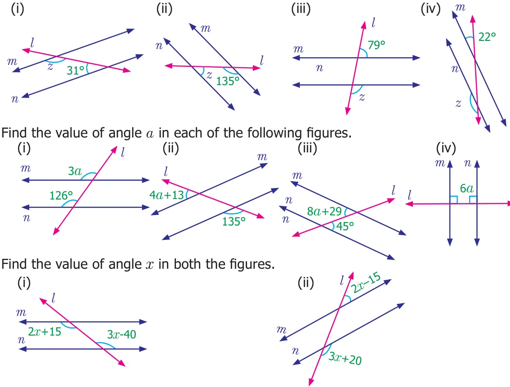
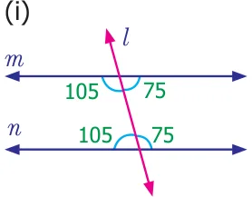
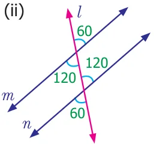
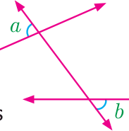
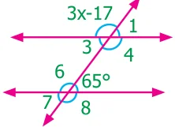

Dividing by 6 on both sides
\(= 180 ^{\circ}\) gives, \(x = 30 ^{\circ}\) . \(\frac{x}{6} 6\) Now, \(y = 2(30 ^{\circ}\) ) \(= 60 ^{\circ}\) .
- 1.From the figures name the marked pair of angles.



- 2.Find the measure of angle x in each of the following figures.

- 3.Find the measure of angle y in each of the following figures.

- 4.Find the measure of angle z in each of the following figures.

5.
6.
- 7.Anbu has marked the angles as shown below in (i) and (ii). Check whether both of
them are correct. Give reasons.


- 8.Mention two real-life situations where we use parallel lines.
- 9.Two parallel lines are intersected by a transversal. What is the minimum number of
angles you need to know to find the remaining angles. Give reasons.
Objective type questions
- 10.A line which intersects two or more lines in different points is known as
- (i)parallel lines (ii) transversal
- (iii)non-parallel lines (iv) intersecting line

- 11.In the given figure, angles a and b are
- (i)alternate exterior angles (ii) corresponding angles
- (iii)alternate interior angles (iv) vertically opposite angles
- 12.Which of the following statements is ALWAYS TRUE when parallel lines are
cut by a transversal
- (i)corresponding angles are supplementary.
- (ii)alternate interior angles are supplementary.
- (iii)alternate exterior angles are supplementary.
- (iv)interior angles on the same side of the transversal are supplementary.
- 13.In the diagram, what is the value of angle x?

- (i)\(43 ^{\circ}\) (ii) \(44 ^{\circ}\)
- (iii)\(132 ^{\circ}\) (iv) \(134 ^{\circ}\)